From Wikipedia, the free encyclopedia
This is a list of Italian desserts and pastries . Italian cuisine has developed through centuries of social and political changes, with roots as far back as the 4th century BCE. Italian desserts have been heavily influenced by cuisine from surrounding countries and those that have invaded Italy, such as Greece , Spain , Austria , and France . Italian cuisine is also influenced by the Mediterranean climate and agriculture.
Characteristics [ edit ] Italy has an extremely diverse range of cuisines, due to the large amount of influences throughout its history. Peaches, lemons, and pears are popular fruits for recipes, as well as sweet cheeses, such as ricotta and mascarpone.[1] tiramisu . The usage of a cold dairy dessert, such as ice cream or gelato , was introduced to the Western world through Italy.[2]
Italian desserts [ edit ]
Image
Affogato
Espresso served with a scoop of ice cream
Angel wings
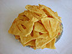 Fried dough shaped into ribbons and coated in powdered sugar
Image
Barbajada
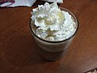 Drink made from whipped chocolate, milk, and coffee
Baxin
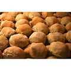 Sweet from Liguira, Italy utilizing anise seeds and flour
Biscotti
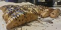 Italian biscuit, typically filled with nuts or dried fruit, or dipped in chocolate
Biscuit Tortoni
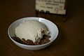 Ice cream made from eggs and heavy cream, sometimes containing chopped cherries or topped with minced almonds or crumbled macaroons
Bombolone
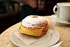 Italian doughnut, filled with typically chocolate, cream, or jam
Bruttiboni
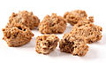 Biscuit made from almonds or hazelnuts
Budino
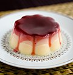 Pudding made from milk and egg custard, typically topped with a crust or whipped-cream topping
Image
Camporelli
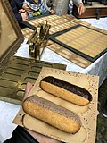 Ladyfinger-like biscuits made from sugar, flour, and eggs
Cannoli
Rolled, crispy dough filled with ricotta cream
Cartocci
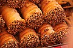 Filled fried dough pastry
Cassata
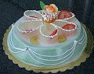 Round sponge cake moistened with fruit juice
Cavallucci
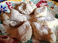 Pastry made with anise, walnuts, candied fruits, coriander, and flour
Ciambella
Ring-shaped cake made using flour, milk, sugar, and vanilla flavoring
Colomba di Pasqua
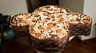
Confetti
Almonds covered in dyed, sugar coating
Crocetta of Caltanissetta
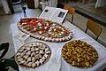 Sweet pastry made from almonds, sugar, sweet lemon purée, oranges or other fruit, pistachio and icing sugar
Crostata
Baked tart or pie, hailing from Naples
Cucidati
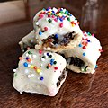 Fig cookie with vanilla icing
Cupeta
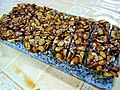 Dessert made from honey, dissolved sugar and diced almonds
Image
Gelato
Italian dessert similar to ice cream, thicker in consistency
Genoise
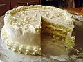 Sponge cake made with melted butter whipped into the dough
Gianduja (chocolate)
Chocolate made from hazelnut cream
Gianduiotto
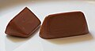 Chocolate made from sugar, cocoa, and hazelnuts
Granita
Italian ice dessert made from sugar, water and various flavorings
Image
Pandoro
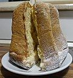 Traditional Italian sweet bread in a star-like formation
Panettone
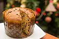 Sweet bread featuring dried fruits and chocolate
Panforte
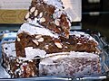 Chewy Italian dessert containing fruits and nuts
Panna cotta
Italian dessert of sweetened cream thickened with gelatin and molded
Panpepato
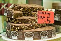 Round sweet bread with nuts and dried fruit
Pasticciotto
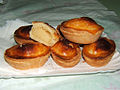 Italian pastry filled with ricotta cheese and egg custard
Pastiera
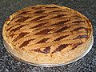 Neapolitan tart made with cooked wheat, eggs, ricotta cheese, and flavoured with orange flower water
Penuche
Fudge-like candy made from brown sugar, butter, and milk
Pignolata
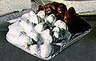 Soft pastry, covered in chocolate and lemon-flavoured syrup or icing
Pinza
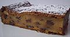 Traditional dessert flan with pine nuts, dried figs, raisins, fennel seeds and grappa
Pinza bolognese
Jam-filled pastry
Image
Sanguinaccio dolce
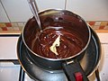 Italian pudding made from pig's blood which is made creamy and sweetened with ingredients such as chocolate, milk, pine nuts, and raisins
Semifreddo
Frozen dessert similar to ice cream, with the main ingredients being egg yolks, sugar, and cream.
Sfinge
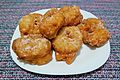 Doughnut sprinkled with powdered sugar
Sfogliatella
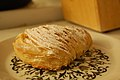 Shell-shaped cream-filled Italian pastry originating from Campania
Spumoni
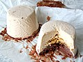 Molded gelato made with layers of different colors and flavors, usually containing candied fruits and nuts
Struffoli
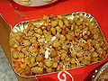 Neapolitan dish made of deep fried balls of sweet dough
Sugoli
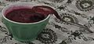 Dessert pudding prepared with the must of red grapes, flour and sugar, cooked slowly and then left to cool
Image
Taralli
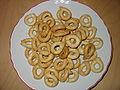 Cracker similar to a breadstick--can be sweet or savory
Tartufo
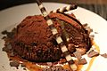 Gelato covered and filled with melted chocolate
Tiramisu
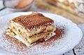 Dessert made of ladyfingers dipped in coffee, layered with a whipped mixture of eggs, sugar, and mascarpone cheese, flavoured with cocoa
Torrone
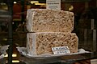 Nougat made with honey, sugar, and whipped egg whites, then filled with roasted pistachios and almonds
Torta Barozzi
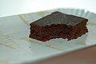 Thin, crispy cake made from chocolate and coffee
Torta caprese
Italian cake made with chocolate and either almonds or hazelnuts
Torta della nonna
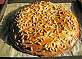 Italian sweet pastry cake filled with vanilla-flavored custard and covered with pine nuts and confectioner's sugar.
Torta alla Monferrina
Cake made from pumpkin, or apples and sugar, with amaretti, chocolate, eggs, and rum
Torta delle rose
Cake made with leavened dough rich in butter and sugar, which is rolled up and placed in the baking tin, taking the characteristic shape of a basket of rosebuds
Torta setteveli
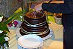 Chocolate cake with seven layers of hazelnut cream, hazelnut crunch, chocolate mousse, and a glaze
Torta Tre Monti
Dessert consisting of thin waffle slices with interwoven layers of cream, then covered in chocolate
Image
Zabaione
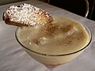 Dessert beverage made with egg yolks, sugar, and a sweet wine
Zeppole
Fried dough dessert with powdered sugar
Zuccotto
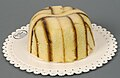 Semi-frozen, chilled dessert made with alchermes liqueur, cake and ice cream
Zuppa Inglese
Italian dessert layering custard and sponge cake
Zelten
Traditional Italian fruitcake served during Christmas
Italian pastries [ edit ] Chocolate and pistachio biscotti See also [ edit ] References [ edit ] External links [ edit ]
show Types By region See also
show History Regional cuisines Pasta and sauces Soups Other dishes (List ) Pizza and street food Cheeses and charcuterie Pastry and desserts (List ) Breads Wines Alcoholic beverages Coffee Related
show Dishes
Africa North America South America Asia Europe Oceania Caribbean Misc./Other
By type
By type


{kind=link}
{kind=link}
{kind=link}
{kind=link}
{kind=link}
.jpg){kind=link}
{kind=link}
{kind=link}
{kind=link}


{kind=link}
{kind=link}
{kind=link}
.jpg){kind=link}
.jpg){kind=link}
{kind=link}
{kind=link}
{kind=link}
{kind=link}
{kind=link}
{kind=link}
{kind=link}
{kind=link}
{kind=link}
{kind=link}
{kind=link}
{kind=link}
{kind=link}
.jpg){kind=link}
{kind=link}
{kind=link}
{kind=link}
{kind=link}
.jpg)
{kind=link}
.jpg){kind=link}
{kind=link}
{kind=link}
{kind=link}
{kind=link}
{kind=link}
{kind=link}
{kind=link}
{kind=link}
{kind=link}
{kind=link}
{kind=link}
{kind=link}
{kind=link}
{kind=link}
{kind=link}
{kind=link}
{kind=link}
.jpg)

{kind=link}
{kind=link}
.jpg){kind=link}
.jpg){kind=link}
{kind=link}
{kind=link}
{kind=link}
{kind=link}

{kind=link}
.jpg){kind=link}
{kind=link}
{kind=link}
{kind=link}

{kind=link}
{kind=link}
{kind=link}
{kind=link}
 Media related to Sweet food of Italy at Wikimedia Commons
Media related to Sweet food of Italy at Wikimedia Commons{kind=link}
{kind=link}